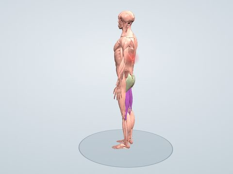
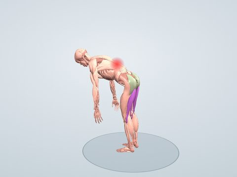

姿勢で比べる

1よい姿勢
2負担がかかる姿勢(前かがみで物を持つ)原因と対策
原因こっている
脊柱起立筋(腰)・腰方形筋
対策ほぐす
腰の両わきとお尻・もも裏をほぐす
腰の両わき(脊柱起立筋・腰方形筋)お尻(大殿筋・梨状筋・中殿筋)もも裏(ハムストリングス)
生活の工夫
- 物を持ち上げるときは、膝を曲げて腰を落とし、物を体に近づける
- 座りっぱなしを避け、30〜60分に一度は立つ
- 痛みが落ち着いてきたら、安静にしすぎず、できる範囲でふだんの生活を続ける


一般的な情報で、診断や治療の代わりにはなりません。痛みが強いとき・続くときは医療機関へ。